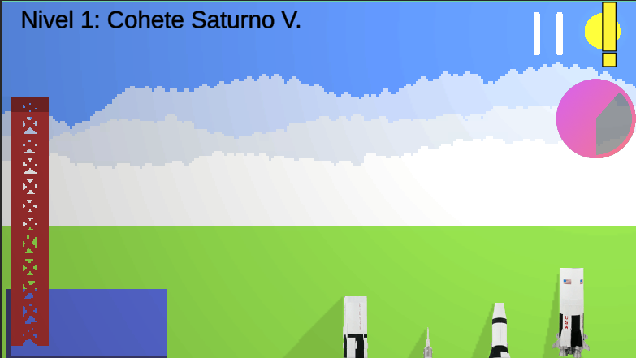
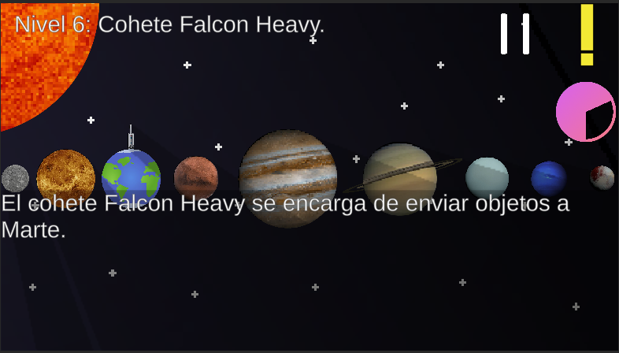

El juego planetario digital de Chimalhuacán ha sido creado con el propósito de entretener y educar al mismo tiempo. A través de sus niveles y misiones, los jugadores podrán aprender sobre planetas, constelaciones, exploración espacial y otros temas relacionados con el universo. Es una forma divertida de reforzar los conocimientos adquiridos durante el recorrido por el planetario.
El videojuego cuenta con un total de 20 niveles distribuidos por las salas que se encuentran en el planetario: Cosmonáutica, Constelaciones, Taller y Sistema Solar. Al completar una sala, podrás acceder a la siguiente y desbloquear recompensas. Es un desafío emocionante que te permitirá explorar y aprender más sobre el espacio mientras te diviertes. ¡Disfruta de la experiencia y busca alcanzar todas las recompensas!
En el videojuego del Planetario Digital de Chimalhuacán, tendrás la oportunidad de resolver diversos puzzles, responder preguntas y enfrentar retos emocionantes para completar los niveles. Estas actividades te desafiarán a aplicar tus conocimientos sobre planetas, estrellas, constelaciones y otros temas relacionados con el espacio. A medida que avanzas en los niveles, los desafíos se vuelven más difíciles, lo que te permitirá poner a prueba tus habilidades y adquirir nuevos conocimientos. ¡Diviértete mientras te sumerges en el fascinante mundo del espacio!
Siempre podrás pedir ayuda si no recuerdas algo o necesitas orientación. Contarás con recursos como pistas, consejos o incluso la posibilidad de consultar información relevante dentro del juego. Esto te ayudará a superar los desafíos y seguir avanzando en los niveles. No te preocupes si tienes dudas o te encuentras con algo que no recuerdas, siempre habrá opciones para recibir apoyo y disfrutar al máximo de la experiencia del juego. ¡Diviértete explorando el espacio y aprendiendo cosas nuevas!
